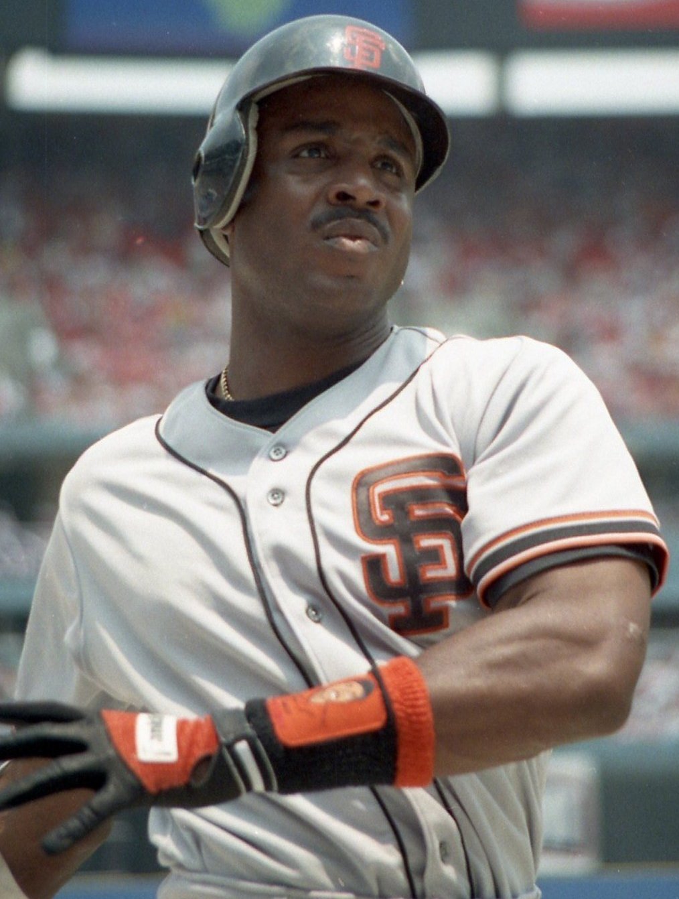
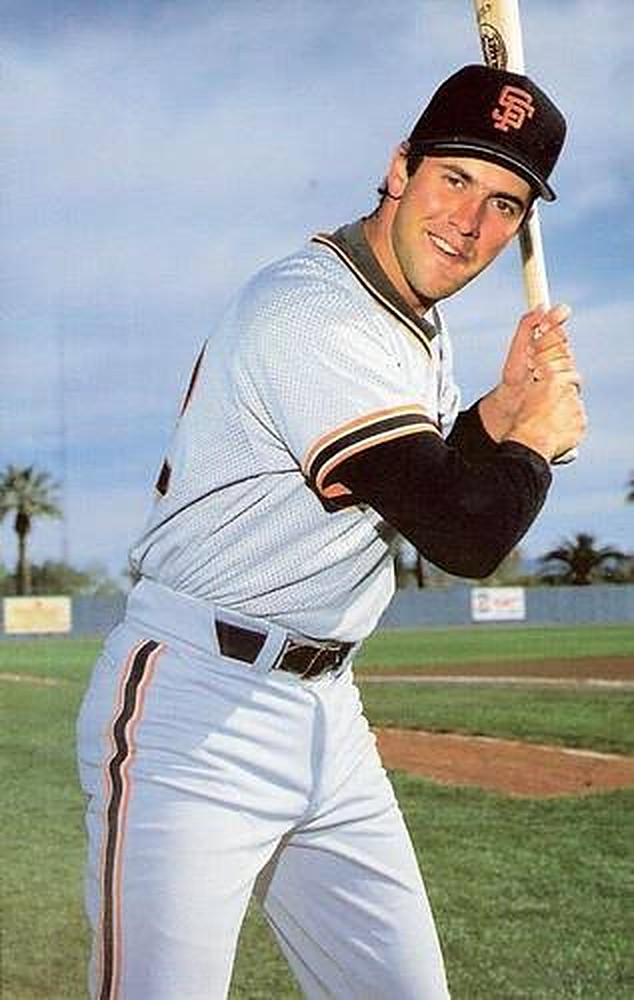
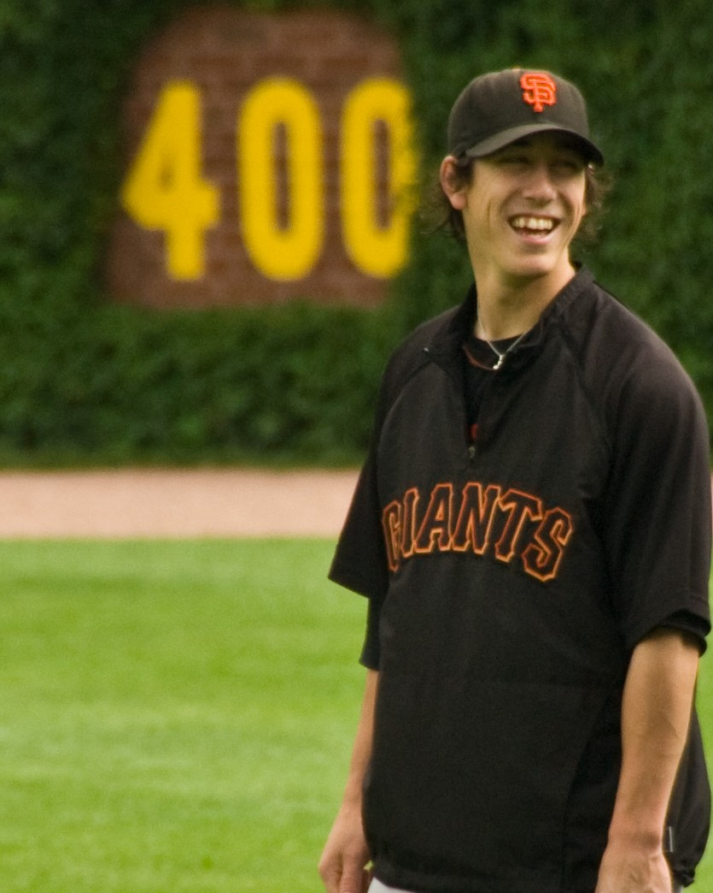
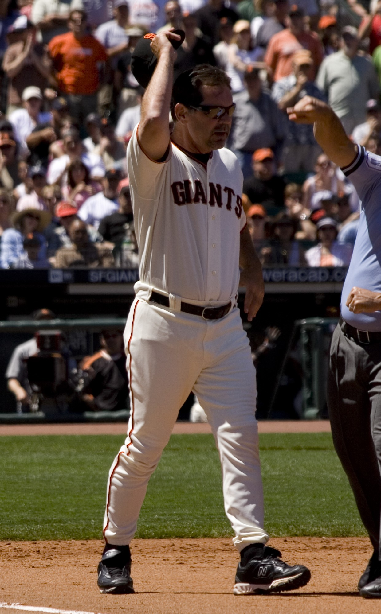
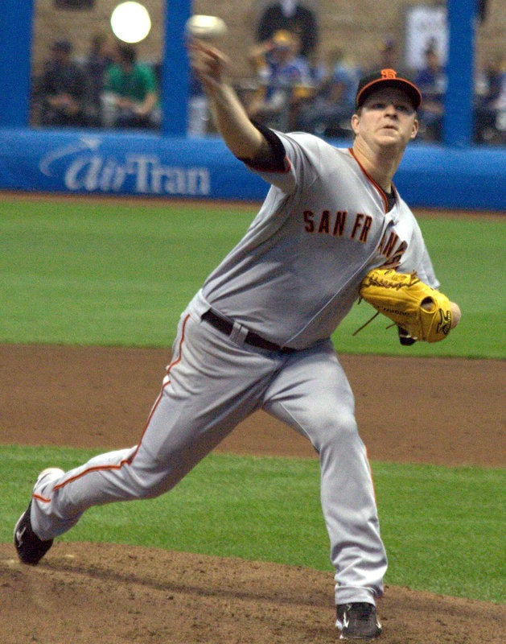
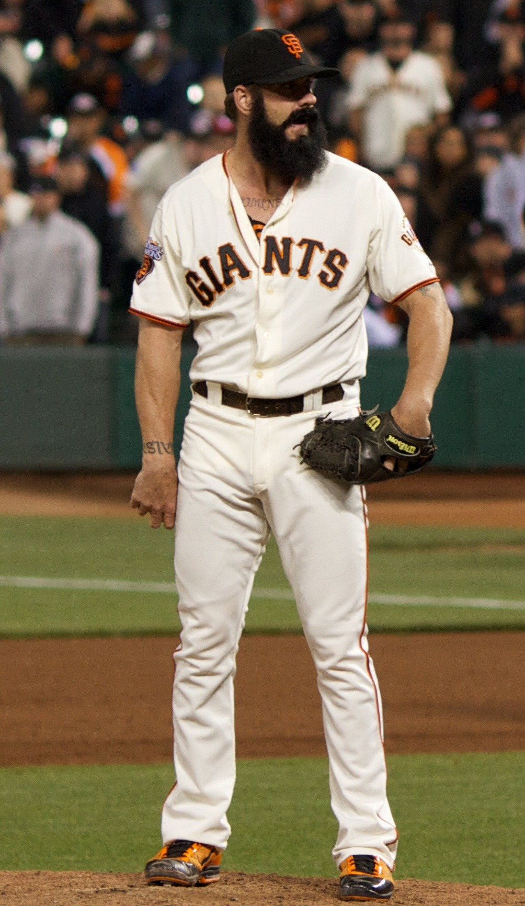

From the Vault
The Bay Area Hall of Fame
Our guys. The ones who wanted the bat, the ball or the puck when the whole building was standing up. Every inductee gets a full page: the life story, every season of stats, the moments that made us lose our minds, the video, and what the people who played with and against them said. More plaques go up all the time. For the eras they built, open Bay Area History and the Dynasties hub.
10Inductees
3Franchises
01
San Francisco Giants
Giants Hall of Famers

GiantsLeft Field · 1993 to 2007
Barry Bonds

GiantsFirst Base · 1986 to 1993
Will Clark
Will the Thrill
GiantsStarting Pitcher · 2007 to 2015
Tim Lincecum
The Freak
GiantsManager · 2007 to 2019
Bruce Bochy
Boch
GiantsStarting Pitcher · 2005 to 2017
Matt Cain
The Horse
GiantsCloser · 2006 to 2012
Brian Wilson
The Beard02
San Francisco 49ers